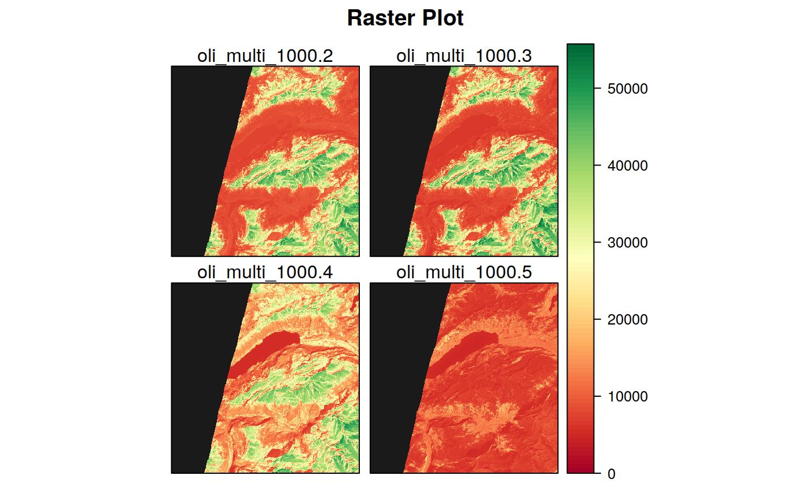

FUNCTION_DESCRIPTION
plot_rast(in_rast, band = 1, in_poly = NULL, in_points = NULL, background = FALSE, limits = NULL, tails = c(0, 1), palette = "RdYlGn", legend_type = "standard", col_outlow = "gray10", col_outhigh = "gray90", maxpixels = 5e+05, title = "Raster Plot", plot_now = TRUE, ...)
Arguments
| in_rast | Input raster object or file |
|---|---|
| band | PARAM_DESCRIPTION, Default: 1 |
| in_poly | optional input polygon vector object or file to be overlayed on the plot, Default: NULL |
| in_points | optional input points vector object or file to be overlayed on the plot, Default: NULL |
| background | not used, Default: FALSE |
| limits |
|
| tails |
|
| palette | Palette to be used for colors (see |
| legend_type | "standard" or "custom" (see examples), Default: 'standard' |
| col_outlow | Color used to plot the values below the lower limit/tail.
Can be a |
| col_outhigh | Color used to plot the values below the lower limit/tail.
Can be a |
| maxpixels |
|
| title |
|
| plot_now |
|
| ... | Any other arguments (?) |
Value
OUTPUT_DESCRIPTION
Details
DETAILS
See also
Examples
library(sprawl) in_rast <- system.file("extdata/REYE_test", "REYE_2016_185_gNDVI.tif", package = "sprawl.data") in_vect <- create_fishnet(in_rast, pix_for_cell = 150)#>#> Warning: 'x' is NULL so the result will be NULL#> Error in 0:nx: argument of length 0# plot only the raster plot_rast(in_rast)# plot only the raster with custom legend plot_rast(in_rast, legend = "custom")# add a polygon and change the legend, palette and maxpixels plot_rast(in_rast, in_poly = in_vect, tails = c(0.1, 0.99), legend = "custom", palette = "RdYlBu" , title = "RapidEye - GNDVI", maxpixels = 10e5)#> Error in plot_rast(in_rast, in_poly = in_vect, tails = c(0.1, 0.99), legend = "custom", palette = "RdYlBu", title = "RapidEye - GNDVI", maxpixels = 1e+06): object 'in_vect' not found# Plot more than one band in_rast <- raster::stack(system.file( "extdata/OLI_test", "oli_multi_1000.tif", package = "sprawl.data"))[[2:5]] plot_rast(in_rast, legend = "custom", maxpixels = 1e5)